Corpo Nazionale dei Vigili del Fuoco
Regolamento Generale
Preambolo
Il regolamento generale del Corpo Nazionale dei Vigili del Fuoco è un documento essenziale per tutti gli operatori del Corpo Nazionale che offre linee guida chiare e precise sulle responsabilità aspetto pratiche e le mansioni aree collegate alla posizione rivestita dai vigili del fuoco, la composizione del Corpo Nazionale e la sua gestione. Si tratta di materiale di studio per i vigili del fuoco che descrive il metodo di lavoro e le responsabilità legate al proprio ruolo ruolo.
Le regole stabilite nel regolamento devono essere osservate e seguite attentamente durante l'esercizio delle proprie responsabilità, qualsiasi infrazione potrà portare all'applicazione di provvedimenti disciplinari all'interno del Corpo.
Il regolamento definisce la struttura organizzativa interna e stabilisce le modalità di accessibilità tramite selezioni pubbliche e interne;
Indice
- Titolo I » Norme generali
- Titolo II » Norme di condotta e di comportamento
- Titolo III » Norme sullo svolgimento del servizio
- Titolo IV » Gerarchia e percorso professionale
- Titolo V » Concorso pubblico e percorso accademico
- Titolo VI » Uffici e Nuclei
Titolo I » Norme generali
Art. 1 » Obiettivi ed ambito di applicazione
Il presente regolamento persegue l'obiettivo di valorizzare le funzioni del Corpo nazionale dei Vigili del Fuoco, di seguito denominato Corpo nazionale, quale struttura dello Stato ad ordinamento civile incardinata nel Ministero dell'interno, del soccorso pubblico e della difesa civile, in materia di pubblica incolumità, in particolare nell'ambito del soccorso tecnico urgente e della prevenzione incendi, nonche', per gli aspetti tecnici, della protezione civile e difesa civile, attraverso la disciplina del servizio, del personale del Corpo nazionale.
Art. 2 » Distintivo di riconoscimento del personale del Corpo nazionale.
Al personale del Corpo nazionale viene rilasciata un distintivo di riconoscimento, da utilizzare in occasione dello svolgimento del servizio d'istituto in abito civile.
Art. 3 » Sede centrale.
La sede centrale denominata “Caserma Alberto Giombini” contiene al suo interno l’intero Corpo Nazionale e Corpi Speciali, svolge compiti di direzione e organizzazione dei servizi operativi.
Art. 3.1 » Accademia San Madacaos.
L’accademia San Madacaos è la sede di formazione degli allievi del Corpo Nazionale.
Art. 4 » Dirigenza Centrale.
La Dirigenza Centrale è l’organo amministrativo e direttivo del Corpo Nazionale.
Si compone con gli operatori di qualifica pari o superiore al Vice Dirigente Aggiunto.
Amministra il Corpo Nazionale in tutte le sue funzioni e viene presieduto dal Dirigente Generale - Capo del Corpo che rappresenta il Corpo Nazionale all’esterno.
Indice i bandi di arruolamento sia pubblici che interni, conferisce congedi e promozioni, nomina i responsabili di uffici e nuclei e li solleva dal proprio incarico.
Art. 5 » Direzione Accademica.
Il Dirigente Accademico controlla l’andamento dell’accademia San Madacaos. Esso si occupa di gestire gli istruttori accademici e di controllare eventuali avvertimenti e prendere provvedimenti verso gli Allievi Vigili Del Fuoco.
Titolo II » Norme di condotta e di comportamento
Art. 6 » Doveri generali.
Il personale del Corpo nazionale deve agire con professionalità, responsabilità e impegno, rispettando la legge e l'interesse pubblico. Deve favorire la fiducia tra l'Amministrazione e i cittadini e garantire un servizio di qualità. In particolare, deve:
a) Collaborare diligentemente, seguendo le norme di sicurezza e ambiente di lavoro;
b) Rispettare il segreto d'ufficio e non utilizzare informazioni per fini privati;
c) Rispettare l'orario di lavoro, registrare la presenza e non assentarsi senza autorizzazione;
d) Mantenere un comportamento corretto e rispettoso durante il lavoro;
e) Eseguire le disposizioni dei superiori, contestando solo se illegittime;
f) Usare e custodire con cura attrezzature e materiali di servizio, segnalando eventuali danni;
g) Non usare beni dell'Amministrazione per scopi personali;
h) Non chiedere né accettare compensi o regali legati al lavoro;
i) Rispettare le regole di accesso ai locali e non introdurre estranei senza autorizzazione;
l) Avvisare tempestivamente in caso di impedimento alla presentazione in servizio;
Art. 7 » Salute e sicurezza sul lavoro.
Il personale del Corpo nazionale deve prendersi cura della propria salute e sicurezza, così come di quella delle altre persone sul luogo di lavoro, seguendo la formazione, le istruzioni e i mezzi forniti, in conformità con le normative di sicurezza vigenti e le direttive del Dipartimento e del datore di lavoro.
l personale deve anche curare l'uniforme di servizio, che è fondamentale per la sicurezza e per l'immediata riconoscibilità della qualifica. È vietato alterare o modificare l'uniforme, comprese le specifiche cromatiche, tecniche e di foggia.
Art. 8 » Onori e saluto.
Il personale del Corpo nazionale, in uniforme, e' tenuto a rendere il saluto alle autorità, secondo le modalita' previste per gli altri Corpi dello Stato ad ordinamento civile. Il saluto e', inoltre, reso, con le medesime modalita', ai responsabili del Corpo nazionale, che sono tenuti a ricambiarlo.
Il saluto e' una forma di cortesia verso coloro con i quali il personale del Corpo venga a contatto per ragioni di ufficio.
Art. 9 » Incompatibilità di impiego.
Il personale del Corpo Nazionale in quanto imparziale non potrà ricoprire contemporaneamente un ruolo all’interno del corpo stesso ed un incarico politico, in caso l’operatore dovrà andare in congedo temporaneo per poi rientrare in servizio alla fine dell’incarico politico.
Art. 10 » Obblighi di formazione professionale.
Il personale del Corpo nazionale e' tenuto a seguire corsi di formazione, aggiornamento, perfezionamento professionale e addestramento organizzati dall'Amministrazione.
L'attività formativa è preordinata a far acquisire, mantenere ed aggiornare un idoneo livello di capacità tecnico-professionali del personale, nonche' a consolidare la capacita' nell'uso degli strumenti di lavoro impiegati, secondo i programmi stabiliti dall'Amministrazione.
Titolo III » Norme sullo svolgimento del servizio
Art. 11 » Impiego nei servizi.
Il personale del Corpo nazionale, salvo casi di necessita' ed emergenza, deve essere impiegato, in relazione alle funzioni del ruolo di appartenenza ed alla qualifica posseduta.
Art. 12 » Presentazione in servizio.
Il personale del Corpo nazionale ha l'obbligo di presentarsi in servizio all'ora stabilita.
L'ingresso e l'uscita dalla sede di servizio devono essere autorizzati dal superiore di qualifica più alta presente al momento.
Art. 13 » Riconoscimento in servizio.
Il personale dei ruoli operativi del Corpo nazionale, in orario lavorativo, e con riguardo alla propria specificita' professionale e di ruolo, indossa l'uniforme in tutte le circostanze e secondo le modalita' indicate dall'Amministrazione
Art. 14 » Disposizioni sullo svolgimento del servizio.
Le disposizioni in materia di organizzazione e svolgimento dei servizi di istituto sono emanate mediante circolari, disposizioni di servizio.
Art. 15 » Circolari.
Le circolari sono atti di indirizzo e regolamentazione generale emanate dagli uffici di livello dirigenziale.
Art. 16 » Disposizioni di servizio.
Le disposizioni di servizio sono gli atti indirizzati al personale o ai settori specificamente individuati, diretti a regolamentare, organizzare e gestire in dettaglio le varie tipologie di servizio.
Art. 17 » Partecipazione del personale ai servizi istituzionali.
Il personale del Corpo nazionale assicura lo svolgimento dei servizi istituzionali in relazione al ruolo ed alla qualifica posseduta. I servizi sono espletati durante l'orario di lavoro e, su disposizione del dirigente, in servizio straordinario o al di fuori dell'orario ordinario e straordinario, secondo quanto previsto dal procedimento negoziale.
Art. 18 » Disciplina dell'orario di servizio e di lavoro.
L'orario di servizio e l'orario o tempo di lavoro, nonché le diverse tipologie di articolazioni dell'orario sono funzionali all'espletamento dei servizi istituzionali del Corpo nazionale e stabilite dalla Dirigenza Centrale.
Art. 19 » Obblighi di permanenza in servizio.
In caso di necessità ed urgenza, ove non sia possibile provvedere altrimenti, al personale del Corpo nazionale puo' essere fatto obbligo, di rimanere in servizio fino al cessare delle esigenze.
Art. 20 » Reperibilità.
Il personale del Corpo nazionale deve poter raggiungere, quando richiesto, il posto di servizio nel piu' breve tempo possibile e, comunque, con tempi e modalita' stabiliti dal Dipartimento.
Art. 21 » Esecuzione dei servizi di soccorso pubblico.
I servizi di soccorso pubblico, resi dal Corpo nazionale, sono espletati dalle strutture ad esso dedicate in favore della popolazione, secondo quanto indicato nel presente regolamento e nelle direttive del Dipartimento.
Il servizio di soccorso pubblico assume valenza prioritaria rispetto ad ogni altro servizio programmato o in corso di espletamento da parte del personale.
I servizi di soccorso pubblico, di cui al presente articolo, sono effettuati in modo gratuito e nessun compenso aggiuntivo e' dovuto da parte dei beneficiari del servizio.
Art. 22 » Impiego del personale nei servizi di soccorso pubblico.
Tutto il personale operativo partecipa all'attività di soccorso in relazione al ruolo ed alla qualifica posseduta, indipendentemente dalla funzione ordinariamente svolta nell'ambito dell'assetto organizzativo dell'ufficio di appartenenza.
In ogni caso l'impiego del personale viene effettuato in relazione alla tipologia di soccorso richiesto e nel rispetto del sistema di coordinamento, direzione e controllo del Corpo nazionale.
Art. 23 » Gestione dei servizi di soccorso pubblico resi dal Corpo nazionale.
I servizi di soccorso pubblico assicurati dal Corpo nazionale, anche in relazione ad esigenze di protezione civile e di difesa civile, si esplicano mediante:
a) il rispetto del sistema di coordinamento, direzione e controllo;
b) l'approntamento di dispositivi di soccorso in grado di intervenire efficacemente nelle situazioni di emergenza;
c) l'effettuazione degli interventi operativi;
d) la predisposizione degli atti e la definizione delle procedure di comunicazione relativi all'attivita' operativa effettuata.
Art. 24 » Conduzione ed uso dei mezzi di soccorso.
I mezzi terrestri del Corpo nazionale devono essere condotti con diligenza da personale appositamente abilitato.
Titolo IV » Gerarchia e percorso professionale
Art. 25 » Gerarchia.
La gerarchia del Corpo Nazionale si divide nelle seguenti categorie: Ruolo Dirigenti, Ruolo dei direttivi, Ruolo Ispettori, Ruolo Capi squadra e Capi Reparto, Ruolo dei Vigili del Fuoco.
Art. 26 » Qualifiche.
Le qualifiche sono così divise:
| Dirigente Generale - Capo del Corpo |
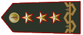 |
| Dirigente Superiore |
 |
| Primo Dirigente |
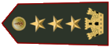 |
| Vice Dirigente |
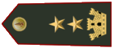 |
| Vice Dirigente Aggiunto |
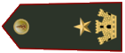 |
| Ispettore Coordinatore |
 |
| Ispettore Esperto |
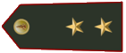 |
| Ispettore |
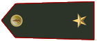 |
| Capo Reparto Esperto |
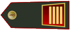 |
| Capo Reparto |
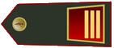 |
| Capo Squadra Esperto |
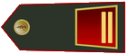 |
| Capo Squadra |
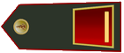 |
| Vigile del Fuoco Coordinatore |
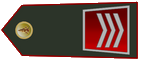 |
| Vigile del Fuoco Esperto |
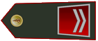 |
| Vigile del Fuoco |
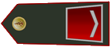 |
| Allievo Vigile del Fuoco |
Art. 27 » Titoli di studio richiesti.
-Dirigente Generale - Due Lauree tra Scienze della Difesa e sicurezza, Giurisprudenza, Medicina e Chirurgia e Informatica;
-Dirigente Superiore - Due Lauree tra Scienze della Difesa e sicurezza, Giurisprudenza, Medicina e Chirurgia e Informatica;
-Primo Dirigente - Due Lauree tra Scienze della Difesa e sicurezza, Giurisprudenza, Medicina e Chirurgia e Informatica;
-Vice Dirigente - Due Lauree tra Scienze della Difesa e sicurezza, Giurisprudenza, Medicina e Chirurgia e Informatica;
-Vice Dirigente Aggiunto - Due Lauree tra Scienze della Difesa e sicurezza, Giurisprudenza, Medicina e Chirurgia e Informatica;
-Ispettore Coordinatore - Una Laurea tra Scienze della Difesa e sicurezza, Giurisprudenza, Medicina e Chirurgia e Informatica;
-Ispettore Esperto - Una Laurea tra Scienze della Difesa e sicurezza, Giurisprudenza, Medicina e Chirurgia e Informatica;
-Ispettore - Una Laurea tra Scienze della Difesa e sicurezza, Giurisprudenza, Medicina e Chirurgia e Informatica;
-Capo Reparto Esperto - Diploma;
-Capo Reparto - Diploma;
-Capo Squadra Esperto - Diploma;
-Capo Squadra - Nessuno;
-Vigile del Fuoco Coordinatore - Nessuno;
-Vigile del Fuoco Esperto - Nessuno;
-Vigile del Fuoco - Nessuno;
Art. 28 » Promozioni.
Le promozioni sono assegnate dalla Dirigenza Centrale, basandosi sulla meritocrazia e sull’anzianità degli operatori.
L’ingresso nelle qualifiche del Ruolo Ispettori, e dei Ruolo dei Direttivi avvengono con il superamento di un bando interno indetto dalla dirigenza centrale.
Art. 29 » Concorsi interni Ruolo Ispettori.
Per accedere alle qualifiche del Ruolo di Ispettori, è necessario superare un concorso interno comunicato con circolare della Dirigenza Centrale, riservato al personale già in servizio con un ruolo pari o superiore a Capo Squadra, che effettuerà un esame con la Dirigenza Centrale.
Art. 30 » Concorsi interni Ruolo dei Direttivi.
Per accedere alle qualifiche del Ruolo dei Direttivi, è necessario superare un concorso interno comunicato con circolare della Dirigenza Centrale, riservato al personale già in servizio con un ruolo pari o superiore a Ispettore, che effettuerà un esame con la Dirigenza Centrale.
Art. 31 » Onorificenze.
Il personale durante il servizio all’interno del Corpo Nazionale può ottenere onorificenze per anzianità:
-Medaglia d’oro al Valor Civile - 18 mesi di servizio;
-Medaglia d’argento al Valore Civile - 12 mesi di servizio;
-Medaglia di bronzo al Valor Civile - 6 mesi di servizio;
È inoltre possibile per la Dirigenza Centrale conferire onorificenze al personale per merito in operazioni svolte, o alla memoria.
Art. 32 » Provvedimenti disciplinari.
In caso di infrazioni di codesto regolamento o problematiche disciplinari la Dirigenza Generale adotterà delle sanzioni tramite:
-Richiami Orali;
-Avvisi Scritti;
-Sospensione dal servizio.
Art. 33 » Congedi.
I congedi possono essere assegnati su richiesta del personale o su iniziativa della Dirigenza Centrale in caso di infrazione del regolamento o eccessivi provvedimenti disciplinari, i congedi si dividono in:
-Congedo con Onore assegnato ai Vigili del Fuoco con qualifica pari ad Ispettore o superiore, assegnato a seguito della richiesta del personale e su decisione della Dirigenza Centrale, permette il reintegro nel corpo con la stessa qualifica su decisione della Dirigenza Centrale;
-Congedo con Merito assegnato ai Vigili del Fuoco con qualifica pari a Capo Squadra o superiore, assegnato a seguito della richiesta del personale e su decisione della Dirigenza Centrale, permette il reintegro nel corpo con due qualifiche inferiori su decisione della Dirigenza Centrale;
-Congedo Ordinario assegnato ai Vigili del Fuoco con qualifica pari a Vigile Semplice o superiore, assegnato su richiesta del personale, non ammette il reintegro, per rientrare nel corpo sarà necessario svolgere i concorsi pubblici;
-Congedo con Demerito assegnato dalla Dirigenza Centrale in caso di infrazione del regolamento, della legge o comportamenti lavorativi scorretti.
Titolo V » Concorso pubblico e percorso accademico
Art. 34 » Bando di concorso.
L’accesso al corpo dei Vigili Del Fuoco prevede il superamento del concorso pubblico, che si compone della verifica dei Curriculum Vitae dei candidati, di una prova scritta, e di una prova orale, ed ha inizio con la pubblicazione da parte della Dirigenza Centrale del bando di concorso.
Art. 35 » Curriculum Vitae.
Il concorso ha inizio con la consegna dei Curriculum Vitae dei candidati, i quali se ritenuti idonei potranno proseguire con il concorso pubblico e svolgere la prova scritta.
Art. 36 » Prova Scritta.
Alla prova scritta avranno accesso solo coloro che saranno stati ritenuti idonei alla prova precedente. Essa presenta un test, nel quale sono segnate diverse domande di cultura generale.
Art. 37 » Prova Orale.
I cittadini che verranno che supereranno la prova scritta avranno accesso alla prova orale, ossia un colloquio con i membri della Dirigenza del corpo dei Vigili Del Fuoco.
Art. 38 » Esito bando.
I vincitori del concorso verranno assunti con la qualifica di “Allievo Vigile Del Fuoco” e svolgeranno un periodo accademico della durata di una settimana. Le lezioni verranno svolte all’interno dell’Accademia San Madacaos.
Art. 39 » Accesso all’accademia.
L’accesso al percorso accademico prevede una visita medica all’interno dell’accademia di San Madacaos, dove gli Allievi Vigili del Fuoco verranno sottoposti a dei test medici per verificare se potranno procedere con il periodo accademico o meno. Coloro che saranno ritenuti idonei il giorno seguente cominceranno a seguire le lezioni.
Art. 40 » Formazione accademica.
La Formazione accademica prevede lo svolgimento di lezioni teoriche e pratiche le quali verranno svolte nei giorni indicati dalla Dirigenza Centrale. Le lezioni teoriche serviranno ad assicurare la corretta formazione di ciascun allievo, tuttavia ognuno di essi avrà un massimo di assenze pari ad un terzo delle lezioni totali.
Art. 41 » Esame finale.
Una volta terminate le lezioni accademiche, coloro che avranno totalizzato le presenza necessarie potranno svolgere l’esame finale. Quest’ultimo comprende un colloquio con i membri della Dirigenza dei Vigili Del Fuoco i quali sottoporranno delle domande riguardanti le lezioni svolte a ciascun Allievo Vigile Del Fuoco.
Art. 42 » Giuramento.
Al superamento dell’esame finale i Vigili Del Fuoco Allievo che saranno ritenuti idonei prestano giuramento nelle mani del Dirigente Generale o di un suo delegato.
Art. 43 » Inizio servizio.
Una volta terminato il periodo accademico a seguito del giuramento, gli Allievi Vigili del Fuoco entreranno a far parte del corpo dei Vigili Del Fuoco come Vigili di Ruolo.Essi riceveranno un’ulteriore spiegazione sul come comportarsi in servizio da un membro della Dirigenza o un delegato.
Titolo VI » Uffici e Nuclei
Art. 44 » Introduzione Uffici e Nuclei.
Il Corpo Nazionale al fine di adempiere al meglio ai compiti istituzionali, vede al suo interno nuclei ed uffici, gestiti da un responsabile di ufficio o nucleo su nomina della Dirigenza Centrale.
Art. 45 » Ufficio Gestione Rapporti.
L'ufficio GR, si occupa di esaminare i rapporti compilati dagli operatori, per controllare gli errori ortografici, sintattici e semantici, effettuando le dovute correzioni se necessario. L’ingresso nell’ufficio avviene tramite nomina della Dirigenza Centrale.
Art. 46 » Ufficio Logistico.
L’ufficio Logistico si occupa di gestire, registrare e approvare tutte le richieste di rifornimento effettuate dagli operatori. L’ingresso nell'ufficio avviene tramite nomina della Dirigenza Centrale.
Art. 47 » Ufficio Relazioni con il pubblico.
Si occupa dell’accoglienza dei cittadini nei servizi offerti dal Corpo nazionale dei Vigili del Fuoco, della diffusione di comunicazioni attraverso i canali ufficiali.
L’ingresso nell’ufficio avviene tramite nomina della Dirigenza Centrale.
Art. 48 » Nucleo Speleo Alpino Fluviale.
Il nucleo SAF, è specializzato in soccorsi in ambito fluviale, alluvionale e speleologico e inoltre si occupa di parlare con suicida.
Per entrare a far parte del nucleo è necessario superare un concorso interno indetto dalla Dirigenza Centrale a cui parteciperanno i Capi Nucleo che fanno parte del nucleo stesso.
Art. 49 » Nucleo Investigativo Antincendi.
È un organo di polizia giudiziaria, che studia, ricerca e analizza le cause d'incendio, su propria iniziativa o su specifica richiesta da parte della autorità giudiziaria.
Per entrare a far parte del nucleo è necessario superare un concorso interno indetto dalla Dirigenza Centrale a cui parteciperanno i Capi Nucleo che fanno parte del nucleo stesso.
Art. 50 » Nucleo Topografia.
Il Servizio di Topografia migliora l’efficacia e l’efficienza delle attività del Corpo Nazionale tramite l’approccio geografico. Utilizza risorse umane e strumentali per l’analisi e l’impiego di dati geo-referenziati, consentendo il monitoraggio dell’intervento e la documentazione delle operazioni.
Per entrare a far parte del nucleo è necessario superare un concorso interno indetto dalla Dirigenza Centrale a cui parteciperanno i Capi Nucleo che fanno parte del nucleo stesso.
Art. 51 » Nucleo Operativo Speciale.
Il nucleo NOS, è specializzato in soccorsi in ambito sismico, esplosioni, dissesti statici, idrogeologici, strutture pericolanti e valanga, si occupa della messa in sicurezza alle demolizioni di strutture.
Per entrare a far parte del nucleo è necessario superare un concorso interno indetto dalla Dirigenza Centrale a cui parteciperanno i Capi Nucleo che fanno parte del nucleo stesso.
Art. 52 » Nucleo sommozzatori.
Per le emergenze derivanti dal rischio acquatico, il Corpo dispone dei nuclei di soccorso subacqueo ed acquatico, in grado di intervenire nelle varie situazioni di pericolo legate all'elemento acquatico: dall'incendio a bordo o naufragio di navi alla presenza di rischi biologici, chimici e nucleari, dalla ricerca di persone in mare, laghi, fiumi.
Sono presenti anche degli specialisti nautici, pronti a ogni evenienza in ambito portuale, che può variare dall’incendio al soccorso a imbarcazioni
Intervengono inoltre in scenari alluvionali in ambito urbano, marittimo, lacustre, fluviale.
Per entrare a far parte del nucleo è necessario superare un concorso interno indetto dalla Dirigenza Centrale a cui parteciperanno i Capi Nucleo che fanno parte del nucleo stesso.
Art. 53 » Nucleo Prevenzione Crolli e Incendi.
Il NPCI si occupa della supervisione delle strutture tramite controlli periodici della manutenzione della struttura e della dotazione idonea in caso di emergenze come possibili cedimenti e incendi, al seguito del quale viene rilasciato un Certificato di Agibilità.
Per entrare a far parte del nucleo è necessario superare un concorso interno indetto dalla Dirigenza Centrale a cui parteciperanno i Capi Nucleo che fanno parte del nucleo stesso.
Firmato a NeoTecno,
presso la caserma Alberto Giombini,
il giorno 12 del mese di Febbraio dell'anno 2025
Presidente del Consiglio Superiore della Magistratura,
Commissario Straordinario Vigili del Fuoco,
Sua Grazia Rev. Prof. Cav. Dott. Arata Floris
Commissario Straordinario,
Sottosegretario alla presidenza,
Dott. Nicolò Cavalieri
Capo Reparto Esperto, On. Jennifer Chimera